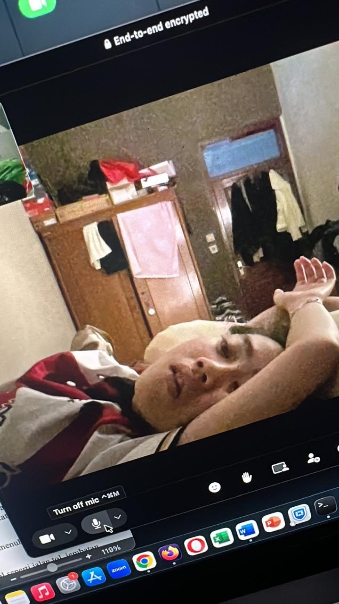
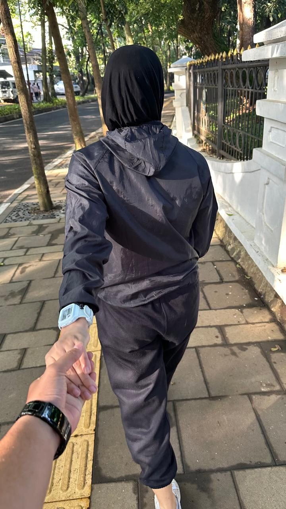
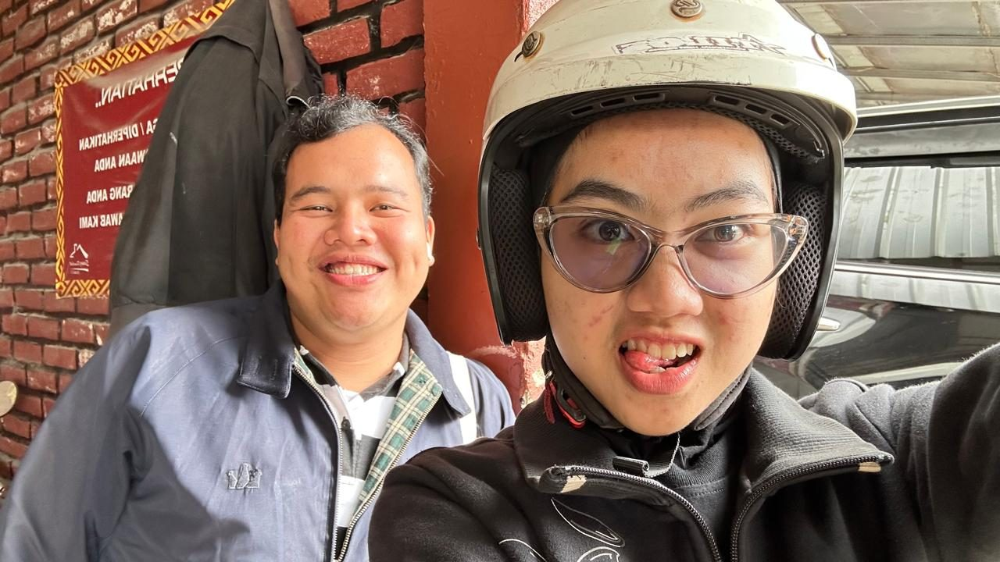
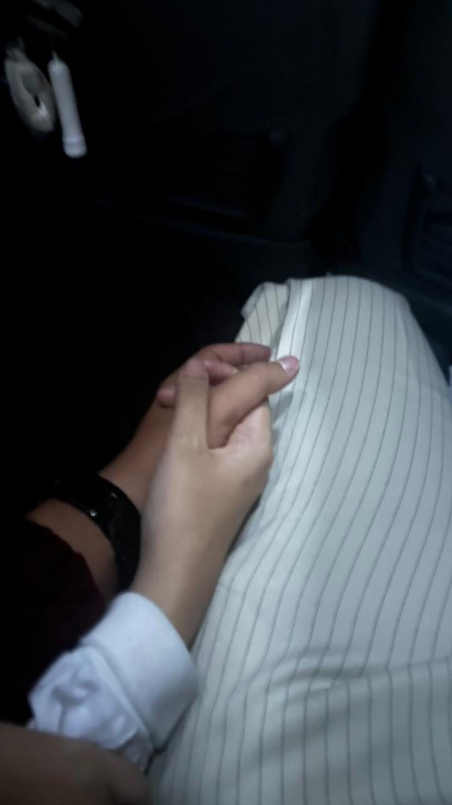

Untuk Wanita
Hebat Itu
Hai, apa kabar? Semoga kamu tidak terganggu ya dengan pesan terakhir dariku ini — mungkin akan sedikit panjang, dan mungkin sedikit membosankan, hehe.
Hari ini hari spesial buat kamu, dan aku tidak lupa. 15 Juni adalah hari ulang tahunmu — hari di mana wanita hebat, wanita kuat, dan wanita tangguh dilahirkan ke dunia ini. Aku selalu bangga sama kamu, karena sudah banyak sekali beban berat yang berhasil kamu lewati sendiri. Sehat selalu, panjang umur, dan semoga selalu dilancarkan segala rezeki dan urusannya. Aamiin.

Aku sedih tidak bisa merayakan momen ini bersamamu di sana — momen yang sudah aku rencanakan sejak kita masih bahagia bersama. Semoga kamu suka dengan kadonya. Kalau memang tidak suka, simpan saja sebagai kenangan terakhir dariku, atau jual lagi juga tidak apa-apa, lumayan buat tabunganmu, hehe. Tapi aku akan sangat bahagia kalau kadonya bisa kamu pakai.


Aku sangat berterima kasih sama kamu, karena sudah pernah hadir di dalam hidupku. Mengenalmu adalah salah satu hal paling indah buat aku. Dari yang awalnya aku hanya bisa melihatmu sebagai orang asing dari jauh, sampai akhirnya diberi kesempatan untuk mengenalmu lebih dekat, dan menjadi bagian kecil dari hidupmu.
Aku senang saat kita bercerita tentang hal-hal kecil, saat kamu mengajakku motoran keliling Kota Bandung dan mencoba berbagai kuliner di sana. Saat kamu mau mendengar cerita dan keluh kesahku, saat kamu mendukungku, saat kamu ada ketika aku bosan, dan saat kamu memasakkanku berbagai menu yang aku mau — apalagi mie dan nasi goreng favoritku.

Terima kasih karena sudah sangat sabar menghadapiku. Terima kasih karena pernah memilih untuk tetap tinggal, meski mungkin aku sering membuatmu lelah. Aku sadar selama ini banyak berbuat salah, belum cukup bisa mengerti dan memahamimu. Untuk semua itu, aku benar-benar minta maaf sebesar-besarnya.


Melepaskanmu mungkin adalah cara terakhirku mencintaimu — dengan membiarkanmu bernapas lega. Kita pernah menjadi dua orang yang saling mencoba membahagiakan. Walaupun akhirnya tidak berjalan sampai jauh, aku tetap bersyukur pernah mengenalmu. Tidak ada dendam, tidak ada benci. Hanya ada rasa terima kasih, maaf, dan doa baik yang akan tetap aku simpan dengan tenang.
Kalau suatu hari nanti kamu jatuh cinta lagi, cintailah dia dengan hati yang penuh. Aku akan mencoba ikut bahagia dari jauh. Sehat-sehat terus ya, cantik. Jangan sering telat makan, jangan terlalu larut dalam capek yang kamu pendam sendirian. Kalau harimu berat, tarik napas pelan-pelan, dan jangan lupa buat ngopi.

Semoga semua impian yang pernah kamu ceritakan — yang dulu membuat matamu bersinar saat menyebutnya — pelan-pelan bisa jadi nyata. Aku tahu kamu sedang berproses, dan aku percaya kamu akan sampai.
And I'm still loving you 🫶🏻🖤 Muhammad Nuzuly — Jakarta